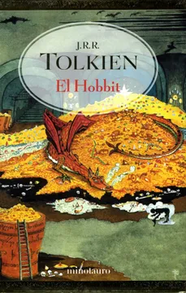

TOP 10
Los libros más vendidos
El Hobbit, J. R. R. Tolkien
Smaug parecía profundamente dormido cuando Bilbo espió una vez más desde la entrada. ¡Pero fingía estar dormido! ¡Estaba vigilando la entrada del túnel!... Sacado de su cómodo agujero-hobbit por Gandalf y una banda de enanos, Bilbo se encuentra de pronto en medio de una conspiración que pretende apoderarse del tesoro de Smaug el Magnífico, un enorme y muy peligroso dragón...
Juego de tronos: Canción de hielo y fuego, George R. R. Martin
En el legendario mundo de los Siete Reinos, donde el verano puede durar décadas y el invierno toda una vida, y donde rastros de una magia inmemorial surgen en los rincones más sombríos, la tierra del norte, Invernalia, está resguardada por un colosal muro de hielo que detiene a fuerzas oscuras y sobrenaturales. En este majestuoso escenario, lord Stark y su familia se encuentran en el centro de un conflicto que desatará todas las pasiones: la traición y la lealtad, la compasión y la sed de venganza, el amor y el poder, la lujuria y el incesto, todo ello para ganar la más mortal de las batallas: el trono de hierro, una poderosa trampa que atrapará a los personajes... y al lector.
La rueda del tiempo 2: La Gran Cacería, Robert Jordan
Rand ha sobrevivido a su primer enfrentamiento con los perversos seguidores del Oscuro, pero ni sus amigos ni él están a salvo, ya que el Señor del mal ha liberado a los Renegados, mientras los héroes de todas las eras se levantan de la tumba cuando el Cuerno de Valere los saca de su sueño. Al verse obligado a enfrentar a las fuerzas de la oscuridad, Rand decide escapar de su destino. Pero la profecía tiene que cumplirse. Cada día que pasa aumenta la fuerza del Oscuro, que lucha con empeño por destruir su arcaica prisión para acabar con la Rueda y poner fin al tiempo. Si nadie se lo impide, hara añicos el Entramado que sustenta la realidad y el mundo estará perdido para siempre. Así pues, mientras Rand huye, el Entramado lo acerca a su sino.
El nombre del viento, Patrick Rothfuss
''Viajé, amé, perdí, confié y me traicionaron''. En una posada en tierra de nadie, un hombre se dispone a relatar, por primera vez, la auténtica historia de su vida. Una historia que únicamente él conoce y que ha quedado diluida tras los rumores, las conjeturas y los cuentos de taberna que le han convertido en un personaje legendario a quien todos daban ya por muerto: Kvothe. Su infancia en una troupe de artistas itinerantes, los años viviendo como un ladrón en las calles de una gran ciudad y su llegada a una universidad donde esperaba encontrar todas las respuestas que había estado buscando.
Rayuela, Julio Cortázar
El amor turbulento de Oliveira y La Maga, los amigos del Club de la Serpiente, las impredecibles caminatas por París -la ciudad que promete el cielo pero puede conducir al infierno-, encuentran su contracara en la aventura protagonizada por Oliveira, Talita y Traveler en Buenos Aires. Rayuela es un libro único, abierto a múltiples lecturas, lúdico, complejo, lleno de riesgo y humor, de una originalidad sin precedentes y un talento innato para influir en las futuras generaciones.
Las repeticiones y otros relatos, Silvina Ocampo
Las repeticiones contiene la mayor parte de los relatos inéditos que Silvina Ocampo no llegó a publicar a lo largo de su vida y que constituyen una muestra más de su inigualable maestría como narradora. Se trata de cuentos cuya escritura se inicia a fines de los treinta y termina en los años ochenta, y a ellos se agregan dos novelas cortas, El vidente y Lo mejor de la familia. Todos estos relatos abordan las siempre inquietantes obsesiones de la autora: el misterio de casas y jardines, el enigma fatal o redentor de una voz, las crueldades de la infancia, la predestinación de un nombre y los amores fantasmales.
Harry Potter y la Piedra Filosofal, J. K. Rowling
Instalado en casa de la horrible familia Dursley, en el número 4 de Privet Drive, donde duerme en una alacena bajo la escalera y a los once años nunca ha celebrado su cumpleaños, la magia es algo totalmente desconocido para Harry Potter. Pero el día que un búho misterioso deja una carta con una invitación al Colegio Hogwarts de Magia y Hechicería, su vida da un vuelco para siempre. Allí, en ese lugar insólito y asombroso, Harry no sólo hará amigos entrañables y conocerá un deporte que los alumnos practican volando montados en escobas, sino que también descubrirá que la magia está en todas partes y, tal vez lo más importante, que el destino ha dispuesto para él un futuro maravilloso... siempre que sobreviva al terrible obstáculo que se interpone en su camino.
Los juegos del hambre, Suzanne Collins
En una oscura versión del futuro próximo, doce chicos y doce chicas se ven obligados a participar en un reality show llamado Los Juegos del Hambre. Solo hay una regla: matar o morir. Cuando Katniss Everdeen, una joven de dieciséis años se presenta voluntaria para ocupar el lugar de su hermana en los juegos, lo entiende como una condena a muerte. Sin embargo, Katniss ya ha visto la muerte de cerca y la supervivencia forma parte de su naturaleza.
Carrie, Stephen King
El escalofriante caso de una joven de apariencia insignificante que se transformó en un ser de poderes anormales, sembrando el terror en la ciudad. Con pulso mágico para mantener la tensión a lo largo de todo el libro, Stephen King narra la atormentada adolescencia de Carrie, y nos envuelve en una atmósfera sobrecogedora cuando la muchacha realiza una serie de descubrimientos hasta llegar al terrible momento de la venganza.
Prosa completa, Alejandra Pizarnik
Conviene destacar dos aspectos de la prosa de Pizarnik. Los relatos, en primer lugar, cuajados de motivos y figuras recurrentes en la obra poética: la seducción y la nostalgia imposibles, la tentación del silencio, la escritura concebida como espacio ceremonial donde se exaltan la vida, la libertad, y la muerte, la infancia y sus espejismos, los espejos y el doble amenazador... Importa menos, en este sentido, la extensión de los relatos que la intensa concentración en ellos de un trabajo de escritura que busca exaltar los poderes del lenguaje -y no la muerte o la locura o el suicidio- el gran motor de la obra de Pizarnik.